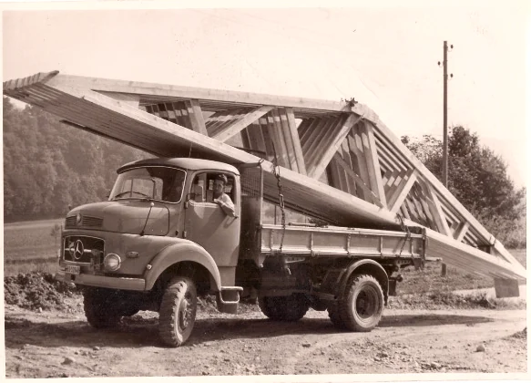
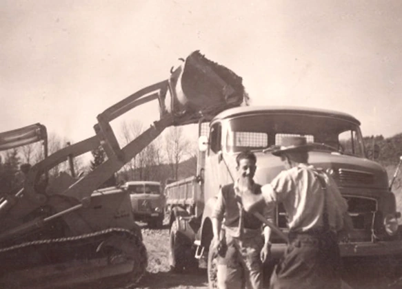
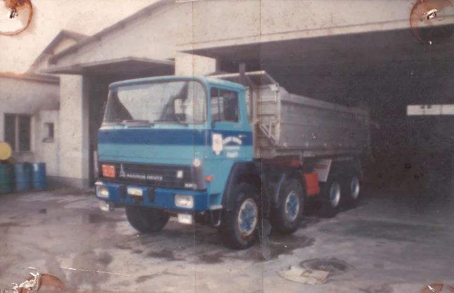
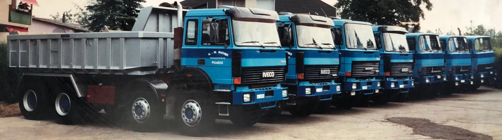
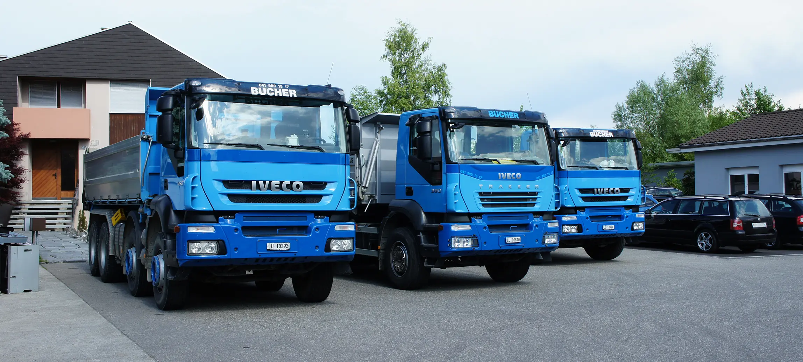
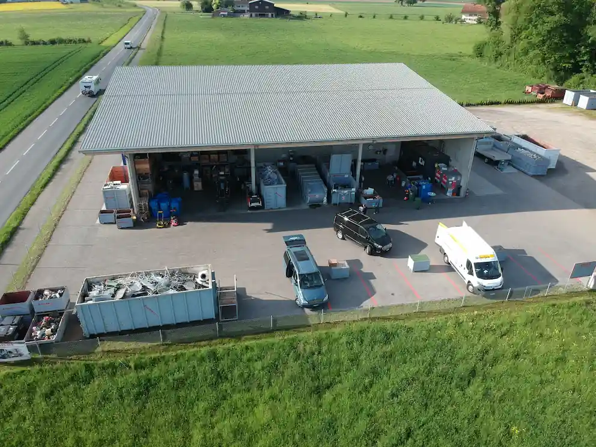
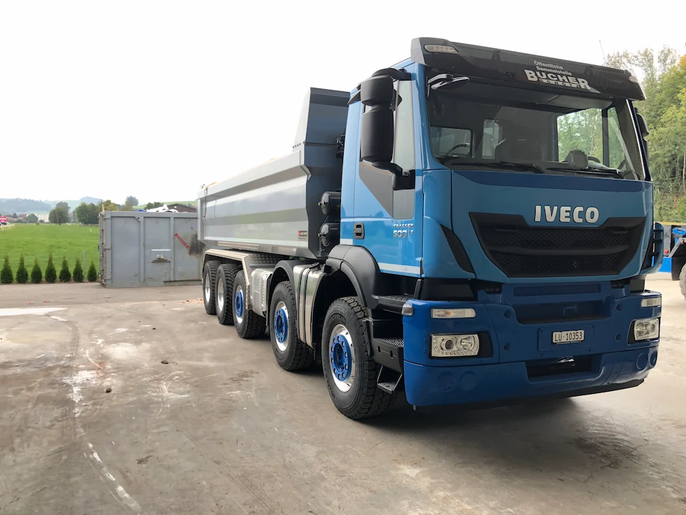

Albert Bucher gründete das Transportunternehmen Bucher Transporte als Einzelfirma.

Ein Aufschwung in der Wirtschaft und das Geschäft konnte rasant wachsen. Neue Lastwagen und Trax wurden angeschafft,
wobei die Unternehmung hauptsächlich im Strassenbau tätig war.

Die ersten 3- und 4-Achser wurden angeschafft.

Erweiterung des Geschäftsfeldes – die Firma schaffte den ersten Welaki an. Recycling gewann zunehmend an Bedeutung, und der
Welaki mit seinen Mulden bot dafür eine ideale Lösung.
Die Junioren von Albert Bucher übernehmen die Unternehmung, welche nun unter dem Namen K. & M. Bucher Transporte auftrat.

Im Jahre 2010 wurde die Firma in eine Aktiengesellschaft umgewandelt, neu unter dem Namen K. & M. Bucher Transporte AG.

Am Rand von Schötz entstand eine moderne Recycling-Sammelstelle. Sie erfüllt höchste Standards und ermöglicht die fachgerechte Entsorgung von Materialien aller Art.

Anschaffung des ersten 5-Achs Lkw's mit 40 Tonnen Gesamtgewicht und schadstoffarmen EURO-6 Motor.
